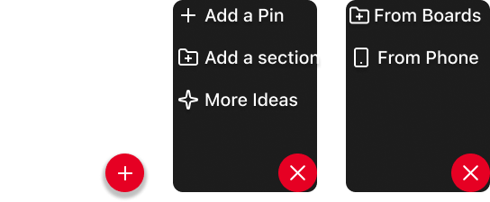
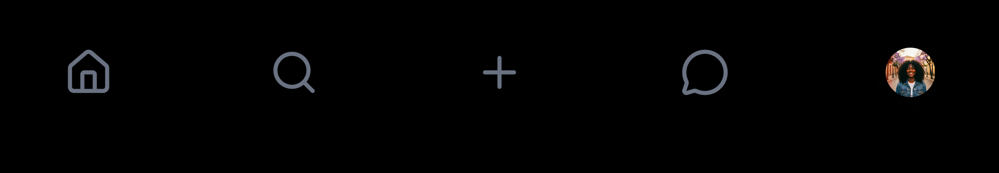
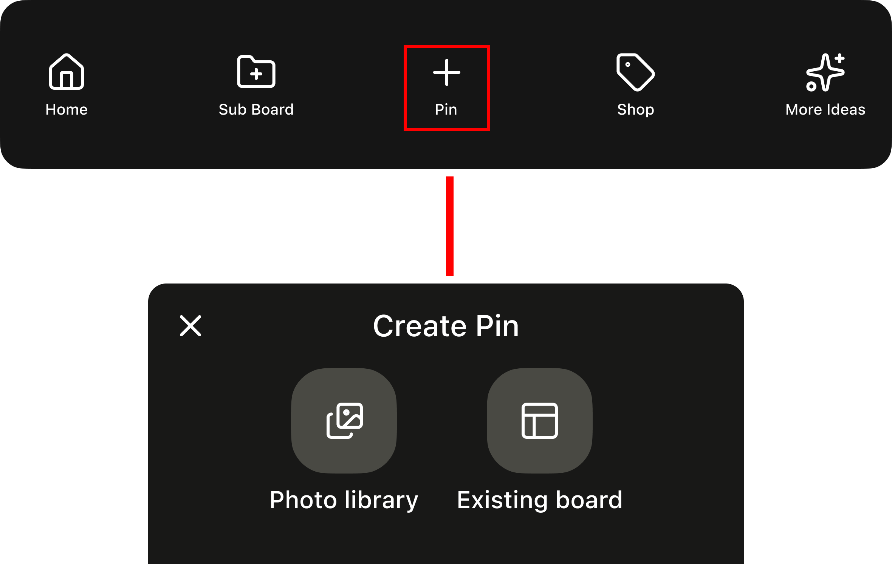

OVERVIEW
Pinterest is a powerful tool for saving inspiration, but as boards grow, organizing and finding pins becomes increasingly difficult. This project explores how improving the visibility and usability of Sections can help users better manage saved content and reduce clutter.
01
Pinterest users save large amounts of content, but organization tools—especially Sections—are easy to miss and difficult to use. As boards grow, locating older pins becomes frustrating, reducing the value of saved content.
02
No access to Pinterest analytics or internal data. This was a conceptual redesign not implemented on the live platform, with limited qualitative user testing. The scope focused on boards, Sections, and pin organization.
Design decisions were guided by usability principles and user feedback rather than metrics.
03
This project focused on making Sections easier to discover and use, while simplifying how users add, filter, and organize pins. Since Sections are a child component of Boards, improving them strengthens overall board usability.
04
The initial concept introduced a closable navigation bar within Sections to help users manage content and differentiate it from the main navigation.

User testing revealed that the navigation felt convoluted and blended into the page. Most users didn't interact with it, reinforcing the need for clearer hierarchy and simpler patterns.
05
Based on data I gathered from user testing, I returned to a traditional tab-based structure with clear labels and predictable placement. Nested menus were removed, and content was repositioned for better visibility.
Prioritizing clarity and familiar navigation patterns:

06
Current experience: Adding pins to boards or Sections requires users to locate each individual pin, making organization slow and inefficient.
Improvement: The redesigned flow allows users to add pins directly from existing boards or their device in just a few clicks, reducing friction and supporting faster organization.

07
Visible Sections
Sections are now surfaced prominently within boards, making them easy to discover and interact with at a glance.
Simplified Navigation
Nested menus replaced with a flat, tab-based structure — reducing clicks and keeping users oriented within their boards.
Faster Pin Management
Users can add pins directly from existing boards or their device in just a few taps, cutting down on repetitive steps.
Users were able to complete organization tasks more easily and with less confusion. Feedback showed improved clarity, reduced effort, and smoother navigation—especially for new or less experienced users.
By simplifying organization tools, the redesign makes Pinterest feel more intuitive and manageable.